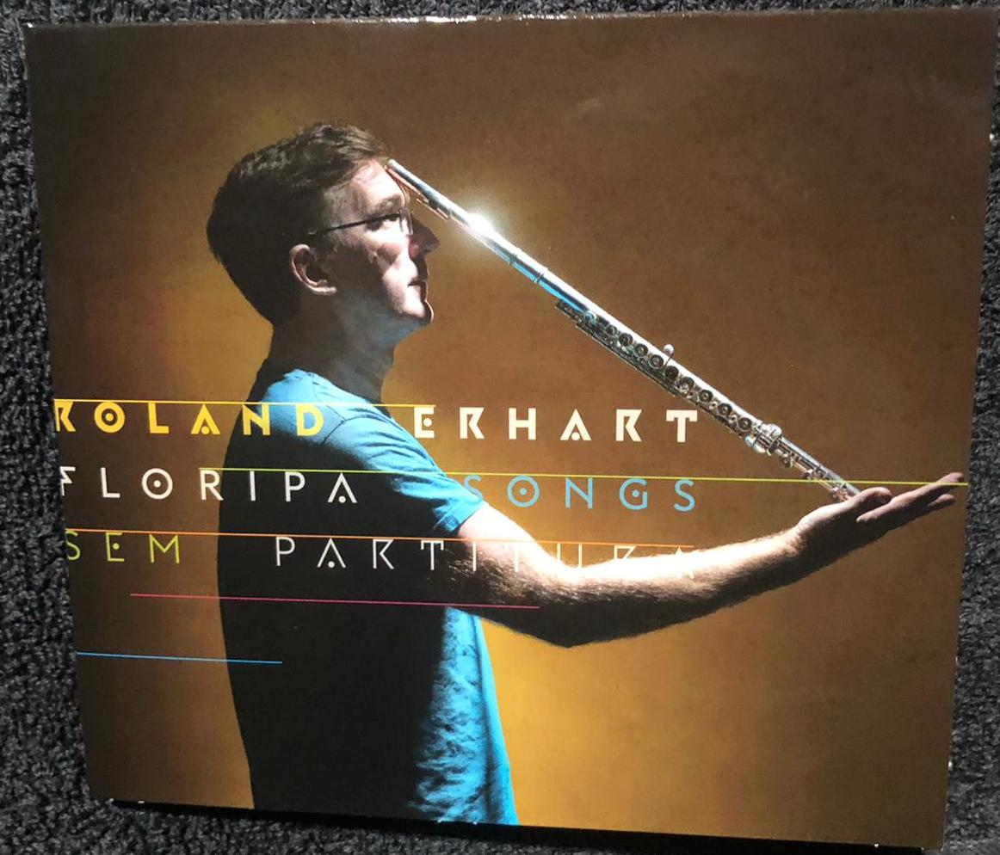
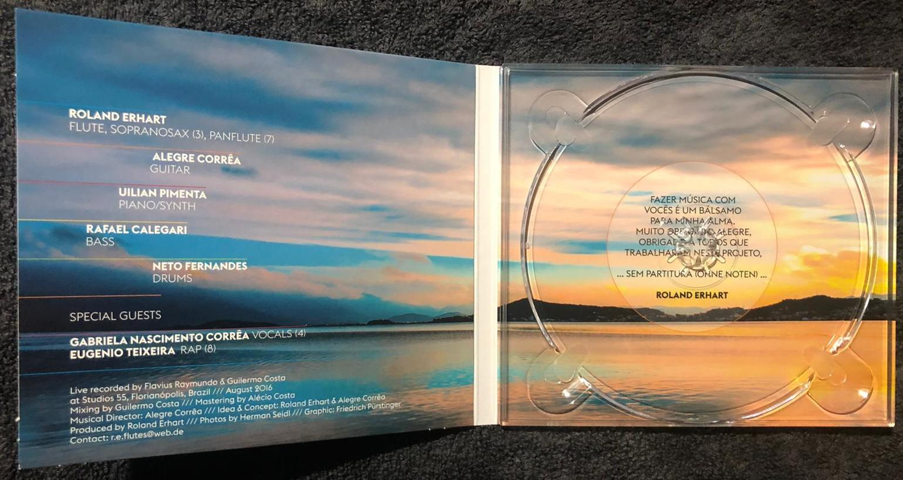
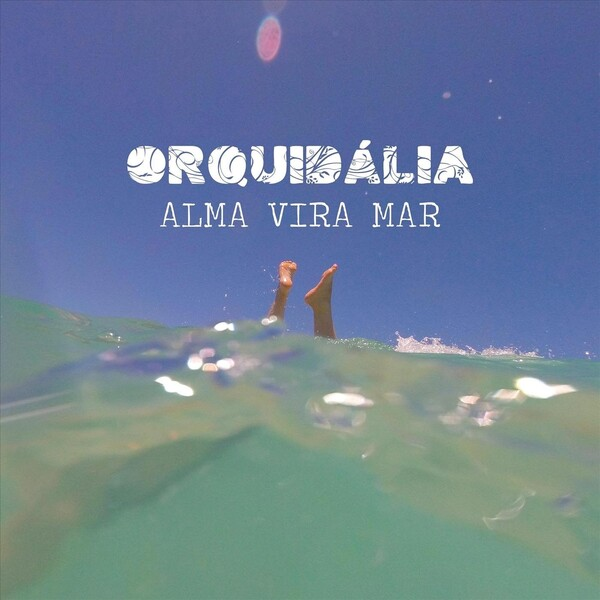

FLAVIUS RAYMUNDO
Engenheiro de Som, Produtor Musical e Especialista em Masterização
flaviusraymundo@gmail.com
+55 (48) 99986-1060
Brasil
FORMAÇÃO ACADÊMICA E ESPECIALIZAÇÃO
- Licenciatura Plena em Música – UDESC (1997)
- Formação em Produção Musical na Berklee - USA (2015)
- Congresso da AES (Audio Engineer Society) – Los Angeles - USA (2016)
- Workshop para desenvolvedores da Acústica Audio - Lodi e Viareggio - Itália (2013 e 2017)
- Workshop de sonorização ao vivo com Robert Scovill - Campinas - Brasil (2019)
- Mentoria em Masterização com Conor Dalton (Daft Punk)– Inglaterra (2023)
BETA TESTER OFICIAL
Beta tester ativo das seguintes empresas de software de áudio:
Izotope (Ozone, RX) - EUA
Steinberg (Cubase, Nuendo e Wavelab)– Alemanha
Avid (Pro Tools) - EUA
Acustica Audio - Itália
Leapwing Audio - Bélgica
DDMF - Alemanha
Tim Petherick - Inglaterra
COMPETÊNCIAS TÉCNICAS
Produção Musical
Masterização
Mixagem
Gravação
Sonorização
Edição de Áudio
Processamento de Sinal
Compositor
INFRAESTRUTURA TÉCNICA
- Conversores: Prismsound - Lyra 2 (Inglaterra)
- Processamento Analógico: Summing Analógico da Vintage Maker com transformadores Neumann (Áustria)
- Plugins Profissionais: Coleção completa da Acustica Audio, Izotope, Leapwing Audio e Oeksound
- Plugins Adicionais: Principais plugins da Plugin Alliance e Waves
- Amplificação: Cambridge Audio 740A (Inglaterra)
- Monitoração: Tannoy DC6T, Electro Voice e Auratone
- DAW: Cubase 14, Nuendo 14, Pro Tools 2025, Wavelab 12
PORTFÓLIO SELECIONADO
Engenheiro de Som
Album "Floripa Songs" do Flautista Roland Erhart (Áustria)
Faixa 6 "Estilo Consagrado"


Músicos:
- Roland Erhart (flauta, sax soprano, flauta pan)
- Alegre Corrêa (guitarra)
- Uilian Pimenta (piano/synth)
- Rafael Calegari (baixo)
- Neto Fernandes (bateria)
- Convidados especiais: Gabriela Nascimento Corrêa (vocais), Eugenio Teixeira (rap)
Mixagem e Masterização
Caraudácia - Álbum "Libertando Olhares"

Músicos:
- Gui Natel (voz, violão, guitarra)
- Lucas da Vila (voz, violão)
- Alegre Correa (percussão)
Mixagem e Masterização
Orquidália - Single "Mátria Amada"

Faixa "Mátria Amada"
Gravação, Mixagem e Masterização
Daniel Namkhay - Música "Native American Song" do Álbum "Poderoso Sol"

Músico:
- Daniel Namkhay (voz, flauta e percussão)
Co-Produção, Mixagem e Masterização
Kaaren Volkmann - Álbum "Presságio do Mar"
Músicos:
- Kaaren Volkmann (voz e violão)
- Kiko Freitas (percussão) - Brasil
- Philippe Baden Powel (piano) - França/Brasil
- Stefano Dall´Ora (baixo acústico) - Itália
- Rafael Calegari (baixo elétrico) - Brasil
Mixagem e Masterização
Single "Red Alert" do multi-instrumentista Chime Mattis (EUA)
Mixagem e Masterização
Single "Closer" do multi-instrumentista Therciano Alburquerque
Comparativo entre antes e depois do processo de mixagem e masterização:
Pré-mix
Master
Composição para Filme
Composição para o filme "Orang Orang"